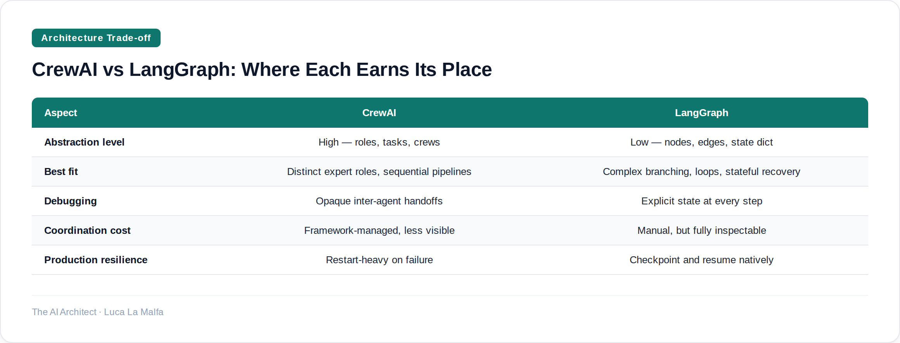

The choice between one capable agent and a coordinated crew determines your system's failure modes before you write a single prompt.
August 3, 2026
Most teams I talk to arrive at multi-agent orchestration the same way: they built a single agent, it got complicated, and someone suggested splitting it up. That instinct isn't wrong, but it's not automatically right either. The decision between a single orchestrated agent and a crew of specialized agents is one of the most consequential architectural choices in an agentic system — and it's almost never discussed in terms of its actual trade-offs. It's usually discussed in terms of which framework looks cooler in a demo.
Here's the real tension. A single agent with a well-scoped set of tools and a tight loop is easier to debug, cheaper to run, and fails in predictable ways. A multi-agent system can parallelize work, isolate concerns, and handle genuinely heterogeneous tasks — but it introduces coordination overhead, inter-agent communication failures, and a whole new class of bugs where the system looks like it's working but individual agents are silently doing the wrong thing. Neither model is universally better. The question is which failure mode you can live with.
Option A
crewAIInc/crewAI — Framework for orchestrating role-playing, autonomous agent crews.
CrewAI's role abstraction is genuinely useful — it forces you to articulate what each agent is actually responsible for, which surfaces design problems early. But that same abstraction can become a trap. When tasks don't map cleanly to roles, you end up with agents that have bloated backstories and vague goals, and the sequential handoff model means one weak agent poisons everything downstream. I've seen crews where the "researcher" was doing half the writing and the "writer" was re-researching because the first output was thin. At that point you've paid the coordination cost without getting the isolation benefit.
LangGraph takes a fundamentally different stance. There are no roles, no crews — just nodes, edges, and state. You define a graph where each node is a callable (an LLM call, a tool, a router), and you control exactly how state flows between them. It's more work upfront, but it gives you something CrewAI doesn't: the ability to build conditional logic, loops, and human-in-the-loop checkpoints directly into the orchestration layer. For production systems where you need to handle retries, branching on intermediate results, or partial failures without restarting from scratch, that matters a lot.

Option B
langchain-ai/langgraph — Low-level orchestration framework for building stateful, resilient agents.
The honest answer is that these two tools aren't really competing for the same use case, even though they're often presented that way. CrewAI is a productivity tool for agent pipelines where the task decomposition is stable and the role boundaries are clear. LangGraph is an infrastructure tool for building agents that need to behave correctly under pressure — retries, conditional routing, interrupted runs. If you're prototyping a research-to-report pipeline for a demo, CrewAI gets you there faster. If you're building something that runs unsupervised in production and needs to handle partial failures gracefully, LangGraph is the right foundation. I've used both in client work, sometimes in the same week. The mistake is picking one as your default before you know which failure modes you're actually designing around.
Inspired by deepseek-ai/DeepSeek-V4-Flash-0731 (Simon Willison)